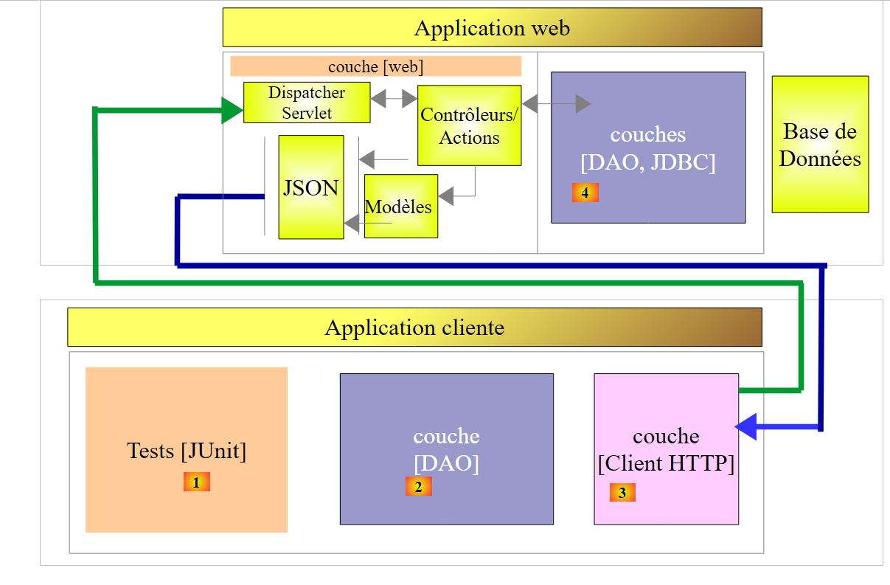
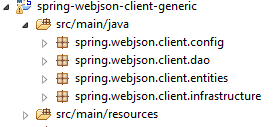
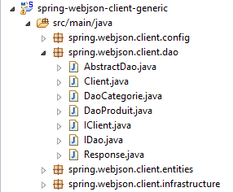
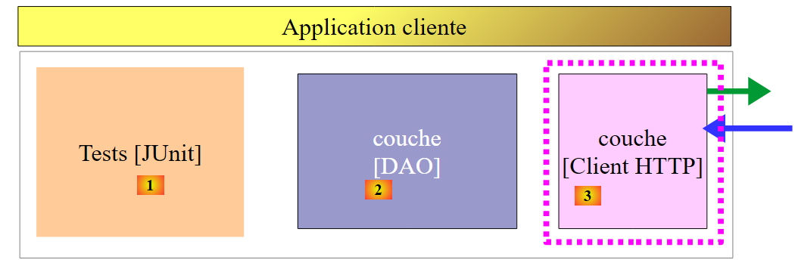
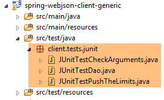
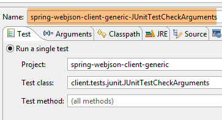
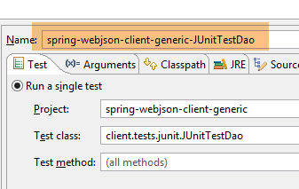
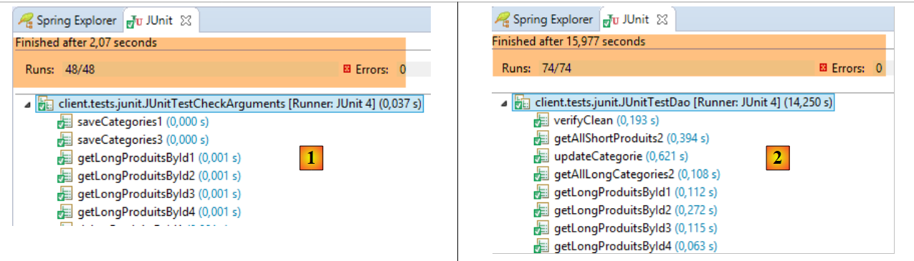
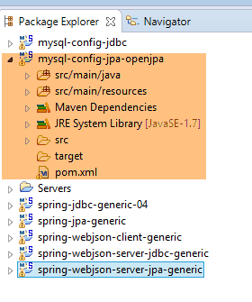

18. Un cliente programado para el servicio web / jSON
Ahora que la base [dbproduitscategories] está disponible en la web, vamos a escribir una aplicación que la aproveche. Tendremos entonces la siguiente arquitectura cliente/servidor:
 |
La aplicación cliente tendrá tres capas:
- una capa [Client HTTP] [3] para comunicarse con la aplicación web / jSON que expone la base de datos;
- una capa [DAO] [2] que presentará la misma interfaz que la capa [DAO] [4];
- una capa de pruebas JUnit [1] para verificar que el cliente y el servidor funcionan correctamente;
18.1. El proyecto Eclipse
El proyecto Eclipse del cliente es el siguiente:
 |
 |  |  |
 |  |
- el paquete [spring.webjson.client.config] contiene la configuración Spring de la capa [DAO];
- el paquete [spring.webjson.client.dao] contiene la implementación de la capa [DAO];
- el paquete [spring.webjson.client.entities] contiene los objetos intercambiados con el servicio web / jSON. Los conocemos todos;
- el paquete [spring.webjson.client.infrastructure] contiene las clases de excepción utilizadas por el proyecto. Las conocemos todas;
18.2. Configuración de Maven del proyecto
El proyecto es un proyecto Maven configurado mediante el siguiente archivo [pom.xml]:
<project xmlns="http://maven.apache.org/POM/4.0.0" xmlns:xsi="http://www.w3.org/2001/XMLSchema-instance"
xsi:schemaLocation="http://maven.apache.org/POM/4.0.0 http://maven.apache.org/xsd/maven-4.0.0.xsd">
<modelVersion>4.0.0</modelVersion>
<groupId>dvp.spring.database</groupId>
<artifactId>spring-webjson-client-generic</artifactId>
<version>0.0.1-SNAPSHOT</version>
<description>Client console du serveur web / jSON</description>
<name>spring-webjson-client-generic</name>
<properties>
<project.build.sourceEncoding>UTF-8</project.build.sourceEncoding>
<java.version>1.7</java.version>
</properties>
<parent>
<groupId>org.springframework.boot</groupId>
<artifactId>spring-boot-starter-parent</artifactId>
<version>1.2.3.RELEASE</version>
</parent>
<dependencies>
<!-- Spring -->
<dependency>
<groupId>org.springframework</groupId>
<artifactId>spring-web</artifactId>
</dependency>
<!-- biblioteca jSON utilizada por Spring -->
<dependency>
<groupId>com.fasterxml.jackson.core</groupId>
<artifactId>jackson-core</artifactId>
</dependency>
<dependency>
<groupId>com.fasterxml.jackson.core</groupId>
<artifactId>jackson-databind</artifactId>
</dependency>
<!-- componente utilizado por Spring RestTemplate -->
<dependency>
<groupId>org.apache.httpcomponents</groupId>
<artifactId>httpclient</artifactId>
</dependency>
<!-- Google Guava -->
<dependency>
<groupId>com.google.guava</groupId>
<artifactId>guava</artifactId>
<version>16.0.1</version>
</dependency>
<!-- biblioteca de registros -->
<dependency>
<groupId>org.springframework.boot</groupId>
<artifactId>spring-boot-starter-logging</artifactId>
</dependency>
<!-- Spring Boot Test -->
<dependency>
<groupId>org.springframework.boot</groupId>
<artifactId>spring-boot-starter-test</artifactId>
<scope>test</scope>
</dependency>
<!-- Spring Boot -->
<dependency>
<groupId>org.springframework.boot</groupId>
<artifactId>spring-boot</artifactId>
<scope>test</scope>
</dependency>
</dependencies>
<!-- plugins -->
<build>
<plugins>
<plugin>
<groupId>org.apache.maven.plugins</groupId>
<artifactId>maven-surefire-plugin</artifactId>
<version>2.18.1</version>
</plugin>
</plugins>
</build>
</project>
- líneas 16-20: el proyecto Maven principal [spring-boot-starter-parent], que nos permite definir una serie de dependencias sin necesidad de incluir version, ya que este se define en el proyecto principal;
- líneas 24-27: aunque no estemos escribiendo una aplicación web, necesitamos la dependencia [spring-web], que incluye la clase [RestTemplate], la cual permite interactuar fácilmente con una aplicación web / jSON;
- líneas 29-36: una biblioteca jSON;
- líneas 38-41: una dependencia que nos permitirá establecer un tiempo de espera para las solicitudes HTTP del cliente. Un tiempo de espera es el tiempo máximo de espera de la respuesta del servidor. Pasado este tiempo, el cliente señala un error de tiempo de espera lanzando una excepción;
- líneas 43-48: la biblioteca Google Guava;
- líneas 50-53: la biblioteca de registros;
- líneas 54-64: la dependencia para las pruebas JUnit. Incluye, en particular, la biblioteca JUnit 4 necesaria para las pruebas. Estas dependencias tienen el atributo [<scope>test</scope>], lo que indica que solo son necesarias para la fase de pruebas. No se incluyen en el archivo final del proyecto;
18.3. Configuración de Spring
|
La clase [AppConfig] realiza la configuración de Spring del cliente HTTP. Su código es el siguiente:
package spring.webjson.client.config;
import java.util.ArrayList;
import java.util.List;
import org.springframework.beans.factory.config.ConfigurableBeanFactory;
import org.springframework.context.annotation.Bean;
import org.springframework.context.annotation.ComponentScan;
import org.springframework.context.annotation.Configuration;
import org.springframework.context.annotation.Scope;
import org.springframework.http.client.HttpComponentsClientHttpRequestFactory;
import org.springframework.http.converter.HttpMessageConverter;
import org.springframework.http.converter.json.MappingJackson2HttpMessageConverter;
import org.springframework.web.client.RestTemplate;
import com.fasterxml.jackson.databind.ObjectMapper;
import com.fasterxml.jackson.databind.ser.impl.SimpleBeanPropertyFilter;
import com.fasterxml.jackson.databind.ser.impl.SimpleFilterProvider;
@Configuration
@ComponentScan({ "spring.webjson.client.dao" })
public class AppConfig {
// constantes
static private final int TIMEOUT = 1000;
static private final String URL_WEBJSON = "http://localhost:8081";
// filtros jSON
@Bean
public ObjectMapper jsonMapper(RestTemplate restTemplate) {
return ((MappingJackson2HttpMessageConverter) (restTemplate.getMessageConverters().get(0))).getObjectMapper();
}
@Bean
@Scope(value = ConfigurableBeanFactory.SCOPE_PROTOTYPE)
ObjectMapper jsonMapperShortCategorie(RestTemplate restTemplate) {
ObjectMapper jsonMapper = jsonMapper(restTemplate);
jsonMapper.setFilters(new SimpleFilterProvider().addFilter("jsonFilterCategorie",
SimpleBeanPropertyFilter.serializeAllExcept("produits")));
return jsonMapper;
}
@Bean
@Scope(value = ConfigurableBeanFactory.SCOPE_PROTOTYPE)
ObjectMapper jsonMapperLongCategorie(RestTemplate restTemplate) {
ObjectMapper jsonMapper = jsonMapper(restTemplate);
jsonMapper.setFilters(new SimpleFilterProvider().addFilter("jsonFilterCategorie",
SimpleBeanPropertyFilter.serializeAllExcept()).addFilter("jsonFilterProduit",
SimpleBeanPropertyFilter.serializeAllExcept("categorie")));
return jsonMapper;
}
@Bean
@Scope(value = ConfigurableBeanFactory.SCOPE_PROTOTYPE)
ObjectMapper jsonMapperShortProduit(RestTemplate restTemplate) {
ObjectMapper jsonMapper = jsonMapper(restTemplate);
jsonMapper.setFilters(new SimpleFilterProvider().addFilter("jsonFilterProduit",
SimpleBeanPropertyFilter.serializeAllExcept("categorie")));
return jsonMapper;
}
@Bean
@Scope(value = ConfigurableBeanFactory.SCOPE_PROTOTYPE)
ObjectMapper jsonMapperLongProduit(RestTemplate restTemplate) {
ObjectMapper jsonMapper = jsonMapper(restTemplate);
jsonMapper.setFilters(new SimpleFilterProvider().addFilter("jsonFilterProduit",
SimpleBeanPropertyFilter.serializeAllExcept()).addFilter("jsonFilterCategorie",
SimpleBeanPropertyFilter.serializeAllExcept("produits")));
return jsonMapper;
}
@Bean
public RestTemplate restTemplate(int timeout) {
// creación del componente RestTemplate
HttpComponentsClientHttpRequestFactory factory = new HttpComponentsClientHttpRequestFactory();
RestTemplate restTemplate = new RestTemplate(factory);
// convertidor jSON
List<HttpMessageConverter<?>> messageConverters = new ArrayList<HttpMessageConverter<?>>();
messageConverters.add(new MappingJackson2HttpMessageConverter());
restTemplate.setMessageConverters(messageConverters);
// tiempo de espera de los intercambios
factory.setConnectTimeout(timeout);
factory.setReadTimeout(timeout);
// resultado
return restTemplate;
}
@Bean
public int timeout() {
return TIMEOUT;
}
@Bean
public String urlWebJson() {
return URL_WEBJSON;
}
}
- línea 20: la clase es una clase de configuración de Spring;
- línea 21: hay que buscar otros componentes Spring en el paquete [spring.webjson.client.dao];
- línea 25: se establece un tiempo de espera de un segundo (1000 ms);
- líneas 88-91: el bean que devuelve este valor;
- línea 26: el URL del servicio web / jSON;
- líneas 93-96: el bean que devuelve este valor;
- líneas 72-86: la configuración de la clase [RestTemplate] que gestiona las comunicaciones con el servicio web / jSON. Cuando no es necesario configurarla, se puede utilizar en el código simplemente como [new RestTemplate()]. Aquí queremos establecer el tiempo de espera de las comunicaciones con el servicio web / jSON. El bean [timeout] de la línea 89 se pasa como parámetro al método [restTemplate] de la línea 73;
- línea 75: el componente [HttpComponentsClientHttpRequestFactory] es el que nos permite establecer el tiempo de espera de las comunicaciones (líneas 82-83);
- línea 76: la clase [RestTemplate] se construye con este componente. Dado que se basa en él para comunicarse con el servicio web / jSON, los intercambios estarán sujetos al tiempo de espera;
- líneas 78-80: se asocia a la clase [RestTemplate] un convertidor jSON. Ya lo hemos mencionado al analizar el servicio web. El cliente y el servidor intercambian líneas de texto. Un convertidor se encarga de serializar un objeto en texto y, a la inversa, de deserializar un texto en objeto. Puede haber varios convertidores asociados a la clase [RestTemplate] y el que se elija en un momento dado depende de los encabezados HTTP enviados por el servidor. En este caso, solo tenemos un convertidor jSON, ya que las líneas de texto intercambiadas son de tipo jSON;
- líneas 82-83: se establecen los tiempos de espera de los intercambios;
- líneas 28-70: definen los filtros jSON. Son los mismos que los del servidor presentados en el apartado 17.3.2.1;
- líneas 29-32: el bean [jsonMapper] es el mapeador jSON del convertidor [MappingJackson2HttpMessageConverter] que hemos asociado a la clase [RestTemplate]. Lo necesitamos en la definición de los filtros jSON;
- líneas 34-41: un bean que define el filtro jSON [catégorie sans ses produits]. El método [jsonMapperShortCategorie] recibe como parámetro el bean [restTemplate] definido en la línea 73;
- línea 37: se invoca el método [jsonMapper] de la línea 30 para recuperar el mapeador jSON;
- líneas 38-39: se establece el filtro para obtener una categoría sin sus productos;
- línea 40: se configura el mapeador jSON de esta manera;
- líneas 42-51: el filtro jSON para obtener una categoría con sus productos;
- líneas 53-60: el filtro jSON para obtener un producto sin su categoría;
- líneas 62-70: el filtro jSON para obtener un producto con su categoría;
Todos estos beans estarán disponibles en los códigos de la capa [DAO], así como en las pruebas JUnit.
18.4. Implementación del cliente HTTP
 |
En el ejemplo anterior, es la capa [Client HTTP] la que se comunica con el servicio web que acabamos de crear. Ahora lo analizaremos.
 |
La clase [Client] implementa los intercambios con el servicio web / jSON. Implementa la siguiente interfaz [IClient]:
package spring.webjson.client.dao;
import org.springframework.http.HttpMethod;
public interface IClient {
public <T1, T2> T1 getResponse(String url, HttpMethod method, int errStatus, T2 body);
}
La interfaz solo tiene un método [getResponse]:
- línea 6: el método [getResponse] es un método genérico parametrizado por dos tipos:
- [T1]: es el tipo de respuesta esperada del servidor en [Response<T1>], por ejemplo, [List<Categorie>],
- [T2]: es el tipo del parámetro jSON enviado por las operaciones POST, por ejemplo, [List<Produit>];
- línea 6: el método [getResponse] devuelve un resultado de tipo T1, por ejemplo, [List<Categorie>];
- línea 6: los parámetros de [getResponse] son los siguientes:
- [String url]: el URL que se va a consultar;
- [HttpMethod method]: método HTTP de la consulta, GET o POST, según el caso,
- [int errStatus]: código de error que se debe utilizar en la clase [DaoException], si se produce un error durante la comunicación con el servidor,
- [T2 body]: el valor que se debe enviar si existe POST;
La clase [Client] implementa la interfaz [IClient] de la siguiente manera:
package spring.webjson.client.dao;
import java.net.URI;
import java.util.ArrayList;
import java.util.List;
import org.springframework.beans.factory.annotation.Autowired;
import org.springframework.core.ParameterizedTypeReference;
import org.springframework.http.HttpMethod;
import org.springframework.http.MediaType;
import org.springframework.http.RequestEntity;
import org.springframework.http.ResponseEntity;
import org.springframework.stereotype.Component;
import org.springframework.web.client.RestTemplate;
import spring.webjson.client.infrastructure.DaoException;
@Component
public class Client implements IClient {
// inyecciones
@Autowired
protected RestTemplate restTemplate;
@Autowired
protected String urlServiceWebJson;
// local
private String simpleClassName = getClass().getSimpleName();
// solicitud genérica
@Override
public <T1, T2> T1 getResponse(String url, HttpMethod method, int errStatus, T2 body) {
...
}
// lista de mensajes de error de una excepción
protected List<String> getMessagesForException(Exception exception) {
...
}
}
- línea 18: la clase [Client] es un componente Spring que, por lo tanto, puede inyectarse en otros componentes Spring;
- líneas 22-23: inyección del bean [RestTemplate] definido en [AppConfig] (véase el apartado 18.3), que se encarga de la comunicación con el servidor;
- líneas 24-25: inyección del bean URL del servicio web / jSON definido en [AppConfig] (véase el apartado 18.3);
- líneas 37-39: el método privado [getMessagesForException] es un método de utilidad que permite obtener la lista de mensajes de error contenidos en una excepción. Lo hemos encontrado en varias ocasiones;
Continuemos:
// solicitud genérica
@Override
public <T1, T2> T1 getResponse(String url, HttpMethod method, int errStatus, T2 body) {
// la respuesta del servidor
ResponseEntity<Response<T1>> response;
try {
// se prepara la solicitud
RequestEntity<?> request = null;
if (method == HttpMethod.GET) {
request = RequestEntity.get(new URI(String.format("%s%s", urlServiceWebJson, url)))
.accept(MediaType.APPLICATION_JSON).build();
}
if (method == HttpMethod.POST) {
request = RequestEntity.post(new URI(String.format("%s%s", urlServiceWebJson, url)))
.header("Content-Type", "application/json").accept(MediaType.APPLICATION_JSON).body(body);
}
// ejecutando la consulta
response = restTemplate.exchange(request, new ParameterizedTypeReference<Response<T1>>() {
});
} catch (Exception e) {
// encapsulando la excepción
throw new DaoException(errStatus, e, simpleClassName);
}
...
}
- línea 18: la instrucción que realiza la solicitud al servidor y recibe su respuesta. El componente [RestTemplate] ofrece un gran número de métodos de intercambio con el servidor, pero solo el método [exchange] admite parámetros genéricos. Por este motivo se ha elegido este. El segundo parámetro establece el tipo de respuesta esperada. El primer parámetro es la solicitud de tipo [RequestEntity] (línea 8). El resultado del método [exchange] es de tipo [ResponseEntity<Response<T1>>] (línea 5). El tipo [ResponseEntity] encapsula la respuesta completa del servidor, los encabezados HTTP y el documento enviado por este. Del mismo modo, el tipo [RequestEntity] encapsula toda la solicitud del cliente, incluyendo los encabezados HTTP y el posible valor enviado;
- líneas 8-16: debemos construir la solicitud de tipo [RequestEntity]. Esta varía en función de si se utiliza un GET o un POST para realizar la solicitud;
- línea 10: la consulta para un GET. La clase [RequestEntity] ofrece métodos estáticos para crear las consultas GET, POST, HEAD,... El método [RequestEntity.get] permite crear una consulta GET encadenando los distintos métodos que la construyen:
- el método [RequestEntity.get] admite como parámetro el URL de destino en forma de una instancia URI,
- el método [accept] permite definir los elementos del encabezado HTTP [Accept]. Aquí indicamos que aceptamos el tipo [application/json] que va a enviar el servidor;
- el método [build] utiliza esta información para construir el tipo [RequestEntity] de la solicitud;
- línea 14: la solicitud de un POST. El método [RequestEntity.post] permite crear una solicitud POST encadenando los diferentes métodos que la construyen:
- el método [RequestEntity.post] admite como parámetro el URL de destino en forma de una instancia URI,
- el método [header] define un encabezado HTTP. Aquí se envía al servidor el encabezado [Content-Type: application/json] para indicarle que el valor enviado le llegará en forma de cadena jSON;
- el método [accept] permite indicar que aceptamos el tipo [application/json] que va a enviar el servidor;
- el método [body] establece el valor enviado. Este es el cuarto parámetro del método genérico [getResponse] (línea 1);
- líneas 20-23: si se produce un error de comunicación con el servidor, se lanza una excepción de tipo [DaoException] con el parámetro [errStatus], pasado como tercer parámetro del método genérico [getResponse] (línea 3), como código de error;
El método [getResponse] continúa de la siguiente manera:
// solicitud genérica
@Override
public <T1, T2> T1 getResponse(String url, HttpMethod method, int errStatus, T2 body) {
...
// se recupera el cuerpo de la respuesta
Response<T1> entity = response.getBody();
int status = entity.getStatus();
// ¿Errores del lado del servidor?
if (status != 0) {
// se genera una excepción
throw new DaoException(status, new RuntimeException(entity.getException()), simpleClassName);
} else {
// Todo bien
return entity.getBody();
}
}
- línea 4: hemos recibido la respuesta del servidor. Es de tipo [ResponseEntity<Response<T1>>] (línea 5 del código anterior estudiado), donde la clase [Response] es la clase ya utilizada en el lado del servidor:
package spring.webjson.client.dao;
public class Response<T> {
// ----------------- propiedades
// estado de la operación
private int status;
// la posible excepción
private String exception;
// el cuerpo de la respuesta
private T body;
// constructores
public Response() {
}
public Response(int status, String exception, T body) {
this.status = status;
this.exception = exception;
this.body = body;
}
// getters y setters
...
}
Volvamos al método [getResponse]:
- línea 6: recuperamos el documento de tipo [Response<T1>] encapsulado en la respuesta. Este tipo tiene los campos [int status, String exception, T1 body];
- línea 7: recuperamos el [status] de la respuesta, que es un código de error;
- líneas 9-12: si hay un error, lanzamos una excepción que recoge las dos informaciones [status, exception] de la respuesta del servidor;
- línea 14: en caso contrario, devolvemos el tipo [T1] contenido en la respuesta de tipo [Response<T1>];
La clase [Client] es general. Se puede utilizar para cualquier cliente web / jSON.
18.5. Implementación de la capa [Dao]
 |
 |
18.5.1. La clase [AbstractDao]
La capa [DAO] del lado del cliente presenta la misma interfaz que la capa [DAO] del lado del servidor (véase el apartado 4.7):
package spring.webjson.client.dao;
import java.util.List;
import spring.webjson.client.entities.AbstractCoreEntity;
public interface IDao<T extends AbstractCoreEntity> {
// lista de todas las entidades T
public List<T> getAllShortEntities();
public List<T> getAllLongEntities();
// de entidades específicas - version breve
public List<T> getShortEntitiesById(Iterable<Long> ids);
public List<T> getShortEntitiesById(Long... ids);
public List<T> getShortEntitiesByName(Iterable<String> names);
public List<T> getShortEntitiesByName(String... names);
// de entidades específicas - version larga
public List<T> getLongEntitiesById(Iterable<Long> ids);
public List<T> getLongEntitiesById(Long... ids);
public List<T> getLongEntitiesByName(Iterable<String> names);
public List<T> getLongEntitiesByName(String... names);
// actualización de varias entidades
public List<T> saveEntities(Iterable<T> entities);
public List<T> saveEntities(@SuppressWarnings("unchecked") T... entities);
// eliminación de todas las entidades
public void deleteAllEntities();
// eliminación de varias entidades
public void deleteEntitiesById(Iterable<Long> ids);
public void deleteEntitiesById(Long... ids);
public void deleteEntitiesByName(Iterable<String> names);
public void deleteEntitiesByName(String... names);
public void deleteEntitiesByEntity(Iterable<T> entities);
public void deleteEntitiesByEntity(@SuppressWarnings("unchecked") T... entities);
}
La clase [AbstractDao] implementa la interfaz [IDao]. Es una clase análoga a la clase del mismo nombre del lado del servidor (véase el apartado 4.8). Sirve de clase padre para las clases [DaoCategorie] y [DaoProduit]. No es idéntica por dos razones:
- en el lado del servidor, la clase [AbstractDao] gestiona una información:
// inserciones
@Autowired
@Qualifier("maxPreparedStatementParameters")
protected int maxPreparedStatementParameters;
que no necesitamos aquí.
- En el lado del servidor, la clase [AbstractDao] utiliza anotaciones [@Transactional] para encapsular cada método en una transacción. En el lado del cliente, no hay ninguna base de datos que gestionar. Por lo tanto, esta anotación desaparece;
La clase [AbstractDao] se limita a verificar la validez de los parámetros de llamada de los métodos de la interfaz [IDao] antes de delegar la llamada a las clases hijas:
package spring.webjson.client.dao;
import java.util.ArrayList;
import java.util.List;
import spring.webjson.client.entities.AbstractCoreEntity;
import spring.webjson.client.infrastructure.MyIllegalArgumentException;
import com.google.common.collect.Lists;
public abstract class AbstractDao<T1 extends AbstractCoreEntity> implements IDao<T1> {
// local
protected String simpleClassName = getClass().getSimpleName();
@Override
public List<T1> getShortEntitiesById(Iterable<Long> ids) {
// validez del argumento
List<T1> entities = checkNullOrEmptyArgument(true, ids);
if (entities != null) {
return entities;
}
// resultado
return getShortEntitiesById(Lists.newArrayList(ids));
}
@Override
public List<T1> getShortEntitiesById(Long... ids) {
// validez del argumento
List<T1> entities = checkNullOrEmptyArgument(true, ids);
if (entities != null) {
return entities;
}
// resultado
return getShortEntitiesById(Lists.newArrayList(ids));
}
...
@Override
public void deleteEntitiesByEntity(@SuppressWarnings("unchecked") T1... entities) {
...
}
// métodos privados ----------------------------------------------
private <T3> List<T1> checkNullOrEmptyArgument(boolean checkEmpty, Iterable<T3> elements) {
// ¿elementos nulos?
if (elements == null) {
throw new MyIllegalArgumentException(222, new NullPointerException("L'argument ne peut être null"),
simpleClassName);
}
// ¿elementos vacíos?
if (!elements.iterator().hasNext()) {
if (checkEmpty) {
throw new MyIllegalArgumentException(223, new RuntimeException("l'argument ne peut être une liste vide"),simpleClassName);
} else {
return new ArrayList<T1>();
}
}
// resultado por defecto
return null;
}
@SuppressWarnings("unchecked")
private <T3> List<T1> checkNullOrEmptyArgument(boolean checkEmpty, T3... elements) {
// ¿elementos nulos?
if (elements == null) {
throw new MyIllegalArgumentException(222, new NullPointerException("L'argument ne peut être null"),simpleClassName);
}
// ¿elementos vacíos?
if (elements.length == 0) {
if (checkEmpty) {
throw new MyIllegalArgumentException(223, new RuntimeException("L'argument ne peut être une liste vide"),
simpleClassName);
} else {
return new ArrayList<T1>();
}
}
// resultado por defecto
return null;
}
// métodos protegidos ----------------------------------------------
abstract protected List<T1> getShortEntitiesById(List<Long> ids);
abstract protected List<T1> getShortEntitiesByName(List<String> names);
abstract protected List<T1> getLongEntitiesById(List<Long> ids);
abstract protected List<T1> getLongEntitiesByName(List<String> names);
abstract protected List<T1> saveEntities(List<T1> entities);
abstract protected void deleteEntitiesById(List<Long> ids);
abstract protected void deleteEntitiesByName(List<String> names);
}
18.5.2. La clase [DaoCategorie]
 |
La clase [DaoCategorie] es la siguiente:
package spring.webjson.client.dao;
import java.util.List;
import org.springframework.beans.factory.annotation.Autowired;
import org.springframework.context.ApplicationContext;
import org.springframework.http.HttpMethod;
import org.springframework.stereotype.Component;
import spring.webjson.client.entities.Categorie;
import spring.webjson.client.entities.CoreCategorie;
import spring.webjson.client.entities.CoreProduit;
import spring.webjson.client.entities.Produit;
import spring.webjson.client.infrastructure.DaoException;
import com.fasterxml.jackson.core.type.TypeReference;
import com.fasterxml.jackson.databind.ObjectMapper;
@Component
public class DaoCategorie extends AbstractDao<Categorie> {
@Autowired
private ApplicationContext context;
@Autowired
private IClient client;
...
}
- línea 19: la clase [DaoClient] es un componente Spring en el que, por lo tanto, se pueden inyectar otros componentes Spring;
- línea 20: la clase [DaoClient] hereda de la clase [AbstractDao<Categorie>] que acabamos de ver y, por lo tanto, implementa la interfaz [IDao<Categorie>];
- líneas 22-23: se inyecta el contexto Spring para tener acceso a sus beans;
- líneas 24-25: se inyecta el cliente HTTP que acabamos de crear;
Las implementaciones de los diferentes métodos de la interfaz [DaoCategorie] siguen todas el mismo esquema. Vamos a presentar tres métodos, uno basado en una operación [GET] y los otros dos en una operación [POST].
18.5.2.1. El método [getAllLongEntities]
El método [getAllLongEntities] genera el version largo de todas las categorías en la base:
@Override
public List<Categorie> getAllLongEntities() {
try {
// filtros jSON
ObjectMapper mapper = context.getBean("jsonMapperLongCategorie", ObjectMapper.class);
// obtener todas las categorías
Object map = client.<List<Categorie>, Void> getResponse("/getAllLongCategories", HttpMethod.GET, 232, null);
// la lista de categorías List<Categoría>
List<Categorie> categories = mapper.readValue(mapper.writeValueAsString(map),
new TypeReference<List<Categorie>>() {
});
// vuelve a establecer el enlace producto --> categoría
return linkCategorieWithProduits(categories);
} catch (DaoException e1) {
throw e1;
} catch (Exception e2) {
throw new DaoException(233, e2, simpleClassName);
}
}
- línea 2: el método devuelve la lista de categorías en sus versiones completas;
- línea 5: el mapeador jSON que permitirá serializar el valor enviado (no hay ninguno) y deserializar la respuesta devuelta por la clase [Client] (categorías en sus versiones completas);
- línea 7: se llama al método [getResponse] de la clase [Client]. Este método es el que se encarga de las comunicaciones con el servicio web / jSON. Sus parámetros son los siguientes:
- el URL del servicio consultado [/getAllLongCategories];
- el método [GET] que se va a utilizar;
- el código de error que se utilizará en caso de error (232);
- el valor enviado. En este caso no hay ninguno;
- línea 7: en la expresión [client.<List<Categorie>, Void>] se designan los parámetros efectivos de los tipos genéricos [T1, T2] del método [getResponse]. Recordemos que [T1] es el tipo de la respuesta esperada y [T2] el tipo del valor enviado. Aquí se espera un resultado de tipo [List<Categorie>] y no hay ningún valor enviado de tipo [Void];
- línea 7: el resultado devuelto por el método [getResponse] se coloca en un objeto de tipo [Object]. Es un poco extraño, ya que se espera un tipo [List<Categorie>]. Esto se debe a que el método [getResponse], al trabajar con tipos genéricos [T1, T2], devuelve sistemáticamente un tipo [java.util.LinkedHashMap], que hay que utilizar para obtener el tipo correcto;
- línea 9: se devuelve la lista de categorías. Para ello, se serializa el objeto [map] [mapper.writeValueAsString(map)] en una cadena jSON que se reserializa a un tipo [List<Categorie>];
- línea 13: se ha recibido una lista de categorías, algunas de las cuales pueden tener productos. Se recibe la version corta de estos productos. Por lo tanto, cuando se deserializan, los objetos [Produit] creados tienen su campo [categorie==null]. El método [linkCategorieWithProduits] recrea el vínculo entre un [Produit] y su [Categorie];
- líneas 14-15: se detiene la excepción de tipo [DaoException] que podría haber lanzado el método [getResponse] para volver a lanzarla inmediatamente. Este comportamiento extraño se debe a que, si no se hace así, la excepción de tipo [DaoException] será interceptada por las líneas 16-18, y eso no es lo que queremos;
- líneas 16-18: se detienen todas las demás excepciones para encapsularlas en un tipo [DaoException]. Recordamos que la capa [DAO] solo debe lanzar este tipo de excepción;
El método [linkCategorieWithProduits] que recrea los enlaces entre las entidades [Produit] y las entidades [Categorie] es el siguiente:
private List<Categorie> linkCategorieWithProduits(List<Categorie> categories) {
for (Categorie categorie : categories) {
List<Produit> produits = categorie.getProduits();
if (produits != null) {
for (Produit produit : produits) {
produit.setCategorie(categorie);
}
}
}
return categories;
}
18.5.2.2. Gestión de filtros jSON
Volvamos a la gestión de filtros jSON en el método [getAllLongEntities] anterior:
@Override
public List<Categorie> getAllLongEntities() {
try {
// filtros jSON
ObjectMapper mapper = context.getBean("jsonMapperLongCategorie", ObjectMapper.class);
// obtener todas las categorías
Object map = client.<List<Categorie>, Void> getResponse("/getAllLongCategories", HttpMethod.GET, 232, null);
// la lista de categorías List<Categoría>
List<Categorie> categories = mapper.readValue(mapper.writeValueAsString(map),
new TypeReference<List<Categorie>>() {
});
- línea 5: se recupera del contexto Spring un mapeador jSON capaz de gestionar las versiones largas de las categorías. Volvamos a la definición de este mapeador en la configuración de Spring [AppConfig]:
// filtros jSON
@Bean
public ObjectMapper jsonMapper(RestTemplate restTemplate) {
return ((MappingJackson2HttpMessageConverter) (restTemplate.getMessageConverters().get(0))).getObjectMapper();
}
@Bean
@Scope(value = ConfigurableBeanFactory.SCOPE_PROTOTYPE)
ObjectMapper jsonMapperLongCategorie(RestTemplate restTemplate) {
ObjectMapper jsonMapper = jsonMapper(restTemplate);
jsonMapper.setFilters(new SimpleFilterProvider().addFilter("jsonFilterCategorie",
SimpleBeanPropertyFilter.serializeAllExcept()).addFilter("jsonFilterProduit",
SimpleBeanPropertyFilter.serializeAllExcept("categorie")));
return jsonMapper;
}
@Bean
public RestTemplate restTemplate(int timeout) {
...
}
- el bean [jsonMapperLongCategorie] solicitado por el método [getAlllongEntities] es el bean de las líneas 7-15;
- línea 10: el mapeador lo proporciona el método [jsonMapper] de las líneas 2-5. Se observa que este mapeador jSON es el del objeto [RestTemplate] que gestiona los intercambios HTTP entre el cliente y el servidor. Este mapeador es el que se utiliza por defecto para:
- serializar el valor enviado al servidor;
- deserializar la respuesta devuelta por el servidor;
Volvamos al código de [getAllLongEntities]:
// filtros jSON
ObjectMapper mapper = context.getBean("jsonMapperLongCategorie", ObjectMapper.class);
// obtener todas las categorías
Object map = client.<List<Categorie>, Void> getResponse("/getAllLongCategories", HttpMethod.GET, 232, null);
// la lista de categorías List<Categoría>
List<Categorie> categories = mapper.readValue(mapper.writeValueAsString(map),
new TypeReference<List<Categorie>>() {
});
// volvemos a establecer el enlace producto --> categoría
return linkCategorieWithProduits(categories);
- línea 2: se obtiene el mapeador [jsonMapperLongCategorie] del contexto Spring;
- línea 4: se ejecuta el método [getResponse]. Entonces se produce:
- serialización automática del valor enviado (aquí no hay ninguno);
- deserialización automática de la respuesta recibida, en este caso un tipo List<Categorie>. Esto se debe a que la entidad [Categorie] tiene un filtro jSON [jsonFilterCategorie], por lo que era necesario gestionarlo. Esta es la razón de la línea 2;
- línea 6: el resultado se somete a una segunda serialización/deserialización con este mismo mapeador para recuperar el tipo List<Categorie>. Línea 4, el tipo devuelto por [getResponse] es un tipo [Object];
En los métodos siguientes, recordaremos que el mapeador jSON solicitado al contexto Spring se utiliza tanto para el valor enviado (serialización) como para el valor recibido (deserialización). Si uno o ambos valores tienen un filtro jSON, es necesario configurarlos. Por lo tanto, el mapeador puede tener hasta dos filtros configurados. En lo que sigue, esto nunca ocurre. O bien el valor enviado no tiene filtro (List<Long>, List<String>), o bien es el valor recibido el que no lo tiene (List<CoreCategorie>, List<CoreProduit>). Las entidades que tienen un filtro jSON son únicamente [Categorie] y [Produit].
18.5.2.3. El método [getShortEntitiesById]
El método [getShortEntitiesById] devuelve las versiones abreviadas de las categorías cuyas claves primarias recibe como parámetros:
@Override
protected List<Categorie> getShortEntitiesById(List<Long> ids) {
try {
// filtros jSON
ObjectMapper mapper = context.getBean("jsonMapperShortCategorie", ObjectMapper.class);
// obtener una categoría sin sus productos
Object map = client.<List<Categorie>, List<Long>> getResponse("/getShortCategoriesById", HttpMethod.POST, 204, ids);
// la categoría
return mapper.readValue(mapper.writeValueAsString(map), new TypeReference<List<Categorie>>() {
});
} catch (DaoException e1) {
throw e1;
} catch (Exception e2) {
throw new DaoException(223, e2, simpleClassName);
}
}
- línea 5: el mapeador jSON, que permitirá serializar el valor enviado (una lista de claves primarias) y deserializar la respuesta devuelta por la clase [Client] (categorías en sus versiones cortas). El filtro elegido no tendrá ningún efecto sobre el valor enviado, ya que para los elementos de la lista enviada no hay filtro;
- línea 7: se invoca el método [getResponse] de la clase padre. Este método es el que se encarga de las comunicaciones con el servicio web / jSON. Sus parámetros son los siguientes:
- el URL del servicio consultado [/getShortCategoriesById];
- el método [POST] que se va a utilizar;
- el código de error que se utilizará en caso de error (204);
- el valor enviado. En este caso, se trata de una lista de claves primarias;
- línea 7: en la expresión [client.<List<Categorie>, List<Long>>] se especifican los parámetros efectivos de los tipos genéricos [T1, T2] del método [getResponse]. Recordemos que [T1] es el tipo de la respuesta esperada y [T2] el tipo del valor enviado. Aquí se espera un resultado de tipo [List<Categorie>] y el valor enviado es una lista de claves primarias de tipo [List<Long>];
- línea 7: el resultado devuelto por el método [getResponse] se coloca en un objeto de tipo [Object];
- línea 9: se devuelve la lista de categorías. Para ello, se serializa el objeto [map] [mapper.writeValueAsString(map)] en una cadena jSON que se reserializa a un tipo [List<Categorie>];
18.5.2.4. El método [saveEntities]
El método [saveEntities] persiste las categorías en la base de datos. Su código es el siguiente:
@Override
protected List<Categorie> saveEntities(List<Categorie> entities) {
try {
// filtros jSON
ObjectMapper mapper = context.getBean("jsonMapperLongCategorie", ObjectMapper.class);
// añadir categorías
Object map = client.<List<CoreCategorie>, List<Categorie>> getResponse("/saveCategories", HttpMethod.POST, 200,
entities);
// la lista de categorías principales añadidas
List<CoreCategorie> coreCategories = mapper.readValue(mapper.writeValueAsString(map),
new TypeReference<List<CoreCategorie>>() {
});
// se actualizan las categorías con la información recibida
for (int i = 0; i < entities.size(); i++) {
Categorie categorie = entities.get(i);
CoreCategorie coreCategorie = coreCategories.get(i);
categorie.setId(coreCategorie.getId());
List<Produit> produits = categorie.getProduits();
if (produits != null) {
List<CoreProduit> coreProduits = coreCategorie.getCoreProduits();
for (int j = 0; j < produits.size(); j++) {
Produit produit = produits.get(j);
produit.setId(coreProduits.get(j).getId());
produit.setIdCategorie(categorie.getId());
produit.setCategorie(categorie);
}
}
}
return entities;
} catch (DaoException e1) {
throw e1;
} catch (Exception e2) {
throw new DaoException(220, e2, simpleClassName);
}
}
- línea 2: el método [saveEntities] sirve para persistir en la base de datos las categorías pasadas como parámetro. Enriquece estas mismas categorías con sus claves primarias. Si las categorías se pasan con productos, estos también se persisten;
- línea 5: el mapeador jSON, que permitirá serializar el valor enviado (una lista de categorías en sus versiones largas) y deserializar la respuesta devuelta por la clase [Client] (objetos [CoreCategorie]). El filtro elegido no tendrá ningún efecto sobre el resultado, ya que los elementos de la lista recibida como respuesta no tienen filtro;
- línea 7: se llama al método [getResponse] del padre para realizar los intercambios con el servicio web / jSON;
- el primer parámetro es el URL [/saveCategories];
- el segundo parámetro es el método HTTP que se va a utilizar, en este caso un [POST];
- el tercer parámetro es el código de error que se utilizará en caso de error (200);
- el último parámetro es el valor enviado, en este caso la lista de categorías que se deben conservar;
- línea 7: los parámetros genéricos [T1, T2] del método [getResponse] son aquí [List<CoreCategorie>, List<Categorie>]. El primer tipo es el de la respuesta esperada, el segundo el tipo del valor enviado;
- línea 7: se coloca la respuesta obtenida en un tipo [Object];
- línea 9: se reconstituye la respuesta de tipo [List<CoreCategorie>]. La respuesta que se debe devolver es de tipo [List<Categorie>] (línea 2) y no [List<CoreCategorie>]. La respuesta recibida es la lista de claves primarias de las categorías y productos persistentes;
- líneas 14-28: las claves primarias recibidas se asignan a las categorías y productos (líneas 17, 23, 24). Además, se reconstruyen los enlaces [Produit] --> [Categorie] (líneas 24-25);
Todos los demás métodos siguen el mismo esquema.
18.6. La prueba JUnit
Volvamos a la arquitectura cliente/servidor que se está construyendo:
 |
Hemos construido una capa [DAO] [2] con la misma interfaz que la capa [DAO] [4]. Para probar la capa [DAO] [2], se pueden utilizar las pruebas JUnit que se utilizaron para probar la capa [DAO] [4]:
 |
Estas tres pruebas se ejecutan a partir de las siguientes configuraciones de ejecución:
 |  |
 |
Los resultados de las tres pruebas son los siguientes:
 |
 |
- en [1], la prueba [JUnitTestCheckArguments];
- en [2], la prueba [JUnitTestDao];
- en [3], la prueba [JUnitTestPushTheLimits] ejecutada en el lado del cliente (proyecto [spring-webjson-client-generic]);
- en [3], la prueba [JUnitTestPushTheLimits] ejecutada en el lado del servidor (proyecto [spring-jdbc-generic-04]). Se observa que la capa de red provoca muy poca ralentización en comparación con la provocada por los accesos a SGBD;
18.7. Implementación del servicio web / jSON / JPA / Hibernate
Ahora nos centramos en la siguiente arquitectura:
 |
La modificación se encuentra en [1]. La capa [DAO] del servidor se basa en una implementación JPA. En primer lugar, vamos a utilizar una implementación JPA / Hibernate.
18.7.1. El proyecto Eclipse
Por el momento, los proyectos cargados en Eclipse son los siguientes:
 |
El proyecto [spring-webjson-server-jdbc-generic] se basaba en el proyecto [spring-jdbc-generic-04], que configura la capa DAO / JDBC de acceso a SGBD MySQL. Vamos a crear un nuevo proyecto [spring-webjson-server-jpa-generic] que, a su vez, se basará en el proyecto [spring-jpa-generic], el cual configura la capa DAO / JPA / JDBC de acceso a SGBD MySQL. Sabemos que, en ambos casos, la capa [DAO] implementa la misma interfaz [IDao]. Por lo tanto, el código de la capa [web] no cambia.
Podemos crear el proyecto [spring-webjson-server-jpa-generic] copiando y pegando el proyecto [spring-webjson-server-jdbc-generic]:
 |
- en [1], designar una carpeta creada específicamente para el nuevo proyecto;
 |
Hay tres tipos de modificaciones que realizar. Las primeras se encuentran en el archivo [pom.xml] de configuración de Maven del proyecto:
<project xmlns="http://maven.apache.org/POM/4.0.0" xmlns:xsi="http://www.w3.org/2001/XMLSchema-instance"
xsi:schemaLocation="http://maven.apache.org/POM/4.0.0 http://maven.apache.org/xsd/maven-4.0.0.xsd">
<modelVersion>4.0.0</modelVersion>
<groupId>dvp.spring.database</groupId>
<artifactId>spring-webjson-server-jpa-generic</artifactId>
<version>0.0.1-SNAPSHOT</version>
<name>spring-webjson-server-jpa-generic</name>
<description>démo spring mvc</description>
<parent>
<groupId>org.springframework.boot</groupId>
<artifactId>spring-boot-starter-parent</artifactId>
<version>1.2.3.RELEASE</version>
</parent>
<dependencies>
<!-- capa web -->
<dependency>
<groupId>org.springframework.boot</groupId>
<artifactId>spring-boot-starter-web</artifactId>
</dependency>
<!-- capa [DAO] -->
<dependency>
<groupId>dvp.spring.database</groupId>
<artifactId>spring-jpa-generic</artifactId>
<version>0.0.1-SNAPSHOT</version>
</dependency>
</dependencies>
<!-- complementos -->
<build>
<plugins>
<plugin>
<groupId>org.apache.maven.plugins</groupId>
<artifactId>maven-surefire-plugin</artifactId>
<version>2.18.1</version>
</plugin>
</plugins>
</build>
</project>
- línea 5: se cambia el nombre del artefacto Maven;
- líneas 24-28: la dependencia ahora es del proyecto [spring-jpa-generic] y ya no de [spring-jdbc-generic-04];
Al final, las dependencias son las siguientes:
 |
Una vez hecho esto, se resuelven todos los problemas de importación que han surgido en las diferentes clases. Por ejemplo, las entidades [Produit, Categorie] ya no hay que buscarlas en el proyecto [spring-jdbc-generic-04], sino en el proyecto [spring-jpa-generic]. Basta con escribir [Ctrl-Maj-O] en el código de una clase para regenerar las importaciones.
La última modificación debe realizarse en el archivo de configuración [AppConfig]:
package spring.webjson.server.config;
import org.springframework.context.annotation.ComponentScan;
import org.springframework.context.annotation.Configuration;
import org.springframework.context.annotation.Import;
@Configuration
@ComponentScan(basePackages = { "spring.webjson.server.service" })
@Import({ spring.data.config.AppConfig.class, WebConfig.class })
public class AppConfig {
}
- línea 9: ahora se importa la configuración del proyecto [spring-jpa-generic] y ya no la del proyecto [spring-jdbc-generic-04];
Una vez hecho esto, ya estamos listos. Iniciamos el servicio web con la configuración [spring-webjson-server-jpa-generic-hibernate-eclipselink]:
 |  |
A continuación, ejecutamos las tres pruebas del cliente genérico [spring-webjson-client-generic]:
 |
 |
- en [1], la prueba [JUnitTestCheckArguments] (configuración de ejecución [spring-webjson-client-generic-JUnitTestCheckArguments]);
- en [2], la prueba [JUnitTestDao] (configuración de ejecución [spring-webjson-client-generic-JUnitTestDao]);
- en [3], la prueba [JUnitTestPushTheLimits] ejecutada en el lado del cliente (configuración de ejecución [spring-webjson-client-generic-JUnitTestPushTheLimits]);
- en [4], la prueba [JUnitTestPushTheLimits] ejecutada en el lado del servidor (configuración de ejecución [spring-jpa-generic-JUnitTestPushTheLimits-hibernate-eclipselink]);
18.7.2. ¿Por qué funciona?
Funciona y, sin embargo, cuando se examina detenidamente el código, resulta sorprendente que funcione. Si bien las capas [DAO] implementadas por los proyectos [spring-jdbc-generic-04] y [spring-jpa-generic] presentan efectivamente la misma interfaz, no manipulan las mismas entidades [Categorie] y [Produit]: en el proyecto [spring-jpa-generic], estas entidades tienen un campo adicional [EntityType entityType] que tiene dos valores posibles:
- EntityType.POJO: la entidad es un objeto normal cuyos campos se pueden utilizar libremente;
- EntityType.PROXY: la entidad es un objeto PROXY generado por la capa [JPA]. En este caso, algunos campos (en realidad, los getter de dichos campos) no se comportan como es habitual, por lo que se han establecido las siguientes reglas:
- si [Categorie.entityType==EntityType.PROXY], entonces no se debe utilizar el método [getProduits];
- si [Produit.entityType==EntityType.PROXY], entonces no se debe utilizar el método [getCategorie];
Sin embargo, acabamos de migrar el proyecto [spring-webjson-server-jdbc-generic] a [spring-webjson-server-jpa-generic] sin modificar el código. ¿Cómo es posible?
Examinemos el código del método [saveCategories]:
@RequestMapping(value = "/saveCategories", method = RequestMethod.POST, consumes = "application/json; charset=UTF-8")
public Response<List<CoreCategorie>> saveCategories(HttpServletRequest request) {
...
// se recupera el valor enviado
String body = CharStreams.toString(request.getReader());
// se deserializa
ObjectMapper mapper = context.getBean("jsonMapperLongCategorie", ObjectMapper.class);
List<Categorie> categories = mapper.readValue(body, new TypeReference<List<Categorie>>() {
});
// se guardan las categorías
categories = daoCategorie.saveEntities(categories);
...
}
- línea 8: se crea un objeto List<Categorie> a partir de una cadena jSON:
- en el valor enviado, los productos no tienen el campo [categorie]. De hecho, no es necesario enviar este campo. Si se enviara, la deserialización construiría un objeto [Produit] con un campo [categorie] que apuntaría a un objeto [Categorie] recién creado. Para n productos, se crearían así n objetos [Categorie], cuando solo se necesita uno. Por otra parte, el campo [categorie] de los productos no apuntaría al objeto correcto [Categorie], que es aquel al que pertenecen. Por lo tanto, aquí los productos tienen un campo [categorie==null];
- en las clases [Categorie] y [Produit], el campo [EntityType entityType] se define de la siguiente manera:
protected EntityType entityType = EntityType.POJO;
Por lo tanto, las entidades [Categorie] y [Produit] creadas por la serialización tienen todas un tipo POJO.
- línea 11: se persisten las categorías. Aquí no debería funcionar. De hecho, si en la implementación JDBC, el campo [Produit.categorie] no es útil para la persistencia (se utiliza el campo [idCategorie]), para la implementación JPA es absolutamente necesario. Este campo debe apuntar a una entidad [Categorie], pero aquí tiene el valor null.
Examinemos el código del método [DaoCategorie.saveEntities] de la capa [DAO / JPA]:
@Override
protected List<Categorie> saveEntities(List<Categorie> categories) {
// se anotan los productos que se van a insertar
List<Produit> insertedProduits = new ArrayList<Produit>();
for (Categorie categorie : categories) {
EntityType categorieType = categorie.getEntityType();
List<Produit> produits = null;
if ((categorieType == EntityType.POJO) && (produits = categorie.getProduits()) != null) {
for (Produit produit : produits) {
if (produit.getId() == null) {
insertedProduits.add(produit);
}
// Aprovechamos para restablecer (si es necesario) la relación producto --> categoría
produit.setCategorie(categorie);
}
}
}
// se guardan las categorías / productos
try {
categoriesRepository.save(categories);
} catch (Exception e) {
throw new DaoException(201, e, simpleClassName);
}
// se actualiza el campo [idCategorie] de los productos insertados
for (Produit produit : insertedProduits) {
produit.setIdCategorie(produit.getCategorie().getId());
}
// resultado
return categories;
}
- líneas 13-14: vemos que el enlace [Produit] --> [Categorie] se restablece para las entidades POJO (línea 8), lo cual es el caso aquí. Esto explica por qué ha funcionado la persistencia de las categorías. Este caso es útil en otras circunstancias: nunca se puede estar seguro de que el usuario haya vinculado correctamente los productos a las categorías. Por lo tanto, lo hacemos en su lugar;
Ahora examinemos el método [ProduitController.saveProduits] que persiste los productos:
@RequestMapping(value = "/saveProduits", method = RequestMethod.POST, consumes = "application/json; charset=UTF-8")
public Response<List<CoreProduit>> saveProduits(HttpServletRequest request) {
...
// se recupera el valor enviado
String body = CharStreams.toString(request.getReader());
// se deserializa
ObjectMapper mapper = context.getBean("jsonMapperShortProduit", ObjectMapper.class);
List<Produit> produits = mapper.readValue(body, new TypeReference<List<Produit>>() {
});
// se guardan los productos
produits = daoProduit.saveEntities(produits);
List<CoreProduit> coreProduits = new ArrayList<CoreProduit>();
for (Produit produit : produits) {
coreProduits.add(new CoreProduit(produit.getId()));
}
// se devuelve la respuesta
return new Response<List<CoreProduit>>(0, null, coreProduits);
...
}
- líneas 8: se reconstruye un objeto List<Producto> a partir del valor enviado. Por las razones explicadas anteriormente, cada objeto [Produit] tendrá un campo:
- [EntityType entityType] igual a [EntityType.POJO];
- [Categorie categorie] igual a null;
- línea 11: la persistencia de los productos debería fallar. De hecho, con JPA, la persistencia de un producto solo es posible si su campo [categorie] apunta a una entidad [Categorie];
Veamos el código del método [DaoProduit.saveEntities] de la capa [DAO / JPA]:
@Override
protected List<Produit> saveEntities(List<Produit> entities) {
// se restablece (si es necesario) la relación entre un producto y su categoría
for (Produit produit : entities) {
if (produit.getEntityType() == EntityType.POJO) {
produit.setCategorie(new Categorie(produit.getIdCategorie(), 0L, null, null));
}
}
// se guardan los productos
try {
return Lists.newArrayList(produitsRepository.save(entities));
} catch (Exception e) {
throw new DaoException(111, e, simpleClassName);
}
}
- líneas 3-8: para cada [Produit] de tipo POJO, se crea un enlace a un objeto [Categorie] que tiene la clave primaria correcta y un version distinto de nulo. Esto es suficiente para que la capa JPA persista correctamente el producto;
Veamos un último punto. Los objetos [Categorie] y [Produit] tienen un campo adicional [EntityType entityType] que se serializará en jSON cuando estos objetos se envíen al cliente. Podemos verificarlo con [Advanced Rest Client]:
 |
En el lado del cliente, las entidades [Categorie] y [Produit] se han definido sin el campo [EntityType entityType]. Esto es normal, ya que los objetos [Categorie] y [Produit] se serializan sin su parte PROXY [Categorie.produits], [Produit.categorie]. Por lo tanto, en el lado del cliente no existe el concepto de entidad PROXY. Solo hay objetos normales.
Del lado del cliente, la cadena jSON [1] se recibe mediante el siguiente método [DaoCategorie.getAllShortEntities]:
@Override
public List<Categorie> getAllShortEntities() {
...
// filtros jSON
ObjectMapper mapper = context.getBean("jsonMapperShortCategorie", ObjectMapper.class);
// obtener todas las categorías
Object map = client.<List<Categorie>, Void> getResponse("/getAllShortCategories", HttpMethod.GET, 202, null);
// la lista de categorías List<Categoría>
return mapper.readValue(mapper.writeValueAsString(map), new TypeReference<List<Categorie>>() {
});
...
}
- línea 5: se configura el mapeador jSON del objeto [RestTemplate] para gestionar los filtros jSON y [jsonFilterCategorie] delobjeto [Categorie] y el filtro [jsonFilterProduit] del objeto [Produit];
- línea 7: el valor enviado (aquí no hay ninguno) y el valor recibido (List<Categorie>) se serializan/deserializan con este mapeador. Se observa que la presencia del campo [entityType] en la cadena jSON recibida, cuando este campo no existe en las entidades [Categorie] y [Produit] del lado del cliente, no provoca ningún error. Se ignora. Si hubiera provocado un error, se habrían modificado los filtros del lado del cliente para que se ignorara.
18.8. Implementación del servicio web / jSON / JPA / EclipseLink
Para implementar el servicio web / jSON / JPA / EclipseLink, basta con cambiar la implementación JPA:
 |
Nota: pulse Alt+F5 y, a continuación, regenere todos los proyectos Maven.
Se iniciará el servicio web con la configuración de ejecución [spring-webjson-server-jpa-generic-hibernate-eclipselink] ya utilizada para Hibernate. Una vez hecho esto, ejecute las tres pruebas del cliente genérico [spring-webjson-client-generic]:
 |
 |
- en [1], la prueba [JUnitTestCheckArguments];
- en [2], la prueba [JUnitTestDao];
- en [3], la prueba [JUnitTestPushTheLimits] ejecutada en el lado del cliente (proyecto [spring-webjson-client-generic]);
- en [4], la prueba [JUnitTestPushTheLimits] ejecutada en el lado del servidor (configuración de ejecución [spring-jpa-generic-JUnitTestPushTheLimits-hibernate-eclipselink]);
18.9. Implementación del servicio web / jSON / JPA / OpenJpa
Para implementar el servicio web / jSON / JPA / OpenJpa, basta con cambiar la implementación JPA:
 |
Nota: pulse Alt+F5 y, a continuación, vuelva a generar todos los proyectos Maven.
Se iniciará el servicio web con la configuración de ejecución [spring-webjson-server-jpa-generic-openpa]:
 |  |
Una vez hecho esto, ejecute las tres pruebas del cliente genérico [spring-webjson-client-generic]:
 |
 |
- en [1], la prueba [JUnitTestCheckArguments] (configuración de ejecución [spring-webjson-client-generic-JUnitTestCheckArguments]);
- en [2], la prueba [JUnitTestDao] (configuración de ejecución [spring-webjson-client-generic-JUnitTestDao]);
- en [3], la prueba [JUnitTestPushTheLimits] ejecutada en el lado del cliente (configuración de ejecución [spring-webjson-client-generic-JUnitTestPushTheLimits]);
- en [4], la prueba [JUnitTestPushTheLimits] ejecutada en el lado del servidor (configuración de ejecución [spring-jpa-generic-JUnitTestPushTheLimits-openpa]);
Para que las pruebas funcionaran, fue necesario realizar modificaciones en la capa DAO / JPA. De hecho, de manera incomprensible, los métodos [DaoCategorie.saveEntities] y [DaoProduit.saveEntities] fallaron al rellenar la base de datos, indicando que los elementos desprendidos no podían persistir. Un elemento desprendido es aquel que tiene:
- una clave primaria no nula;
- un version no nulo;
No se comprobaba ninguno de los dos casos. Como no sabía dónde buscar, dupliqué las entidades que debían persistir en una lista completamente nueva y ahí las pruebas funcionaron. Esta modificación podría haberse realizado:
- en la capa [DAO / JPA];
- en la capa [web], que crea las entidades que se deben persistir;
Decidí hacerlo en la capa [DAO / JPA]. Por supuesto, hay una pérdida de rendimiento, pero es totalmente insignificante en comparación con los tiempos de respuesta de SGBD. Las modificaciones son las siguientes:
En la clase [DaoCategorie] del proyecto [spring-jpa-generic]:
@Override
protected List<Categorie> saveEntities(List<Categorie> categories) {
// ***************************************************************************************
// se clona la lista de categorías -- a veces necesario para OpenJpa -- error no incluido
// ***************************************************************************************
List<Categorie> categories2 = new ArrayList<Categorie>();
for (Categorie categorie : categories) {
// categoría
Categorie categorie2 = new Categorie(categorie.getId(), categorie.getVersion(), categorie.getNom(), null);
EntityType categorieType = categorie.getEntityType();
categorie2.setEntityType(categorieType);
categories2.add(categorie2);
// productos
List<Produit> produits = null;
if ((categorieType == EntityType.POJO) && (produits = categorie.getProduits()) != null) {
List<Produit> produits2 = new ArrayList<Produit>();
for (Produit produit : produits) {
Produit produit2 = new Produit(produit.getId(), produit.getVersion(), produit.getNom(),
produit.getIdCategorie(), produit.getPrix(), produit.getDescription(), produit.getCategorie());
produit2.setEntityType(produit.getEntityType());
produits2.add(produit2);
}
categorie2.setProduits(produits2);
}
}
// se anotan los productos que se van a insertar
List<Produit> insertedProduits = new ArrayList<Produit>();
for (Categorie categorie : categories2) {
EntityType categorieType = categorie.getEntityType();
List<Produit> produits = null;
if ((categorieType == EntityType.POJO) && (produits = categorie.getProduits()) != null) {
for (Produit produit : produits) {
if (produit.getId() == null) {
insertedProduits.add(produit);
}
// Aprovechamos para restablecer (si es necesario) la relación producto --> categoría
produit.setCategorie(categorie);
}
}
}
// se guardan las categorías y los productos
try {
categoriesRepository.save(categories2);
} catch (Exception e) {
throw new DaoException(201, e, simpleClassName);
}
// se actualiza el campo [idCategorie] de los productos insertados
for (Produit produit : insertedProduits) {
produit.setIdCategorie(produit.getCategorie().getId());
}
// resultado
return categories2;
}
- líneas 3-25: la lista [categories] recibida como parámetro (línea 2) se duplica en la lista [categories2] (línea 6). Es esta lista la que se guarda y se devuelve al llamante (línea 52). Esto tiene una consecuencia importante: se devuelve una lista diferente de la lista pasada como parámetro y, por lo tanto, donde antes se podía escribir:
Ahora hay que escribir:
List<Categorie> categories=...
categories=daoCategorie.saveEntities(categories)
// explotación de [categories]
En la clase [DaoProduit] del proyecto [spring-jpa-generic], el método [saveEntities] se modifica de forma similar:
@Override
protected List<Produit> saveEntities(List<Produit> entities) {
// ***************************************************************************************
// se clona la lista de productos -- a veces necesario para OpenJpa -- error no incluido
// ***************************************************************************************
List<Produit> produits2 = new ArrayList<Produit>();
for (Produit produit : entities) {
Produit produit2 = new Produit(produit.getId(), produit.getVersion(), produit.getNom(), produit.getIdCategorie(),
produit.getPrix(), produit.getDescription(), produit.getCategorie());
produit2.setEntityType(produit.getEntityType());
produits2.add(produit2);
}
// se restablece (si es necesario) el vínculo entre un producto y su categoría
for (Produit produit : produits2) {
if (produit.getEntityType() == EntityType.POJO) {
produit.setCategorie(new Categorie(produit.getIdCategorie(), 0L, null, null));
}
}
// se persisten los productos
try {
return Lists.newArrayList(produitsRepository.save(produits2));
} catch (Exception e) {
throw new DaoException(111, e, simpleClassName);
}
}
18.10. Implementación del servicio web / jSON / JPA / EclipseLink / PostgreSQL
Para implementar el servicio web / jSON / JPA / EclipseLink / PostgresQL, es necesario instalar:
- el proyecto [postgresql-config-jdbc] de configuración de la capa JDBC de PostgreSQL;
- el proyecto [postresql-config-jpa-eclipselink] de configuración de la capa JPA de PostgreSQL;
- pulsa Alt-F5 y regenera todos los proyectos Maven;
 |
Ejecutamos SGBD PostgreSQL y lanzamos el servicio web con la configuración de ejecución [spring-webjson-server-jpa-generic-hibernate-eclipselink] ya utilizada anteriormente. Una vez hecho esto, ejecutamos las tres pruebas del cliente genérico [spring-webjson-client-generic]:
 |
 |
- en [1], la prueba [JUnitTestCheckArguments] (configuración de ejecución [spring-webjson-client-generic-JUnitTestCheckArguments]);
- en [2], la prueba [JUnitTestDao] (configuración de ejecución [spring-webjson-client-generic-JUnitTestDao]);
- en [3], la prueba [JUnitTestPushTheLimits] ejecutada en el lado del cliente (configuración de ejecución [spring-webjson-client-generic-JUnitTestPushTheLimits]);
- en [4], la prueba [JUnitTestPushTheLimits] ejecutada en el lado del servidor (configuración de ejecución [spring-jpa-generic-JUnitTestPushTheLimits-hibernate-eclipselink]);